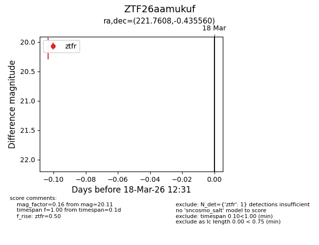
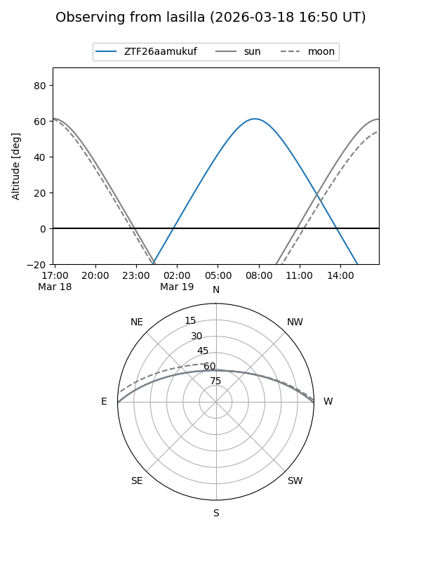
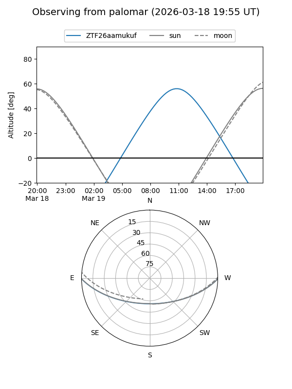

ZTF26aamukuf
Target ZTF26aamukuf at 2026-03-18 12:33
Aliases and brokers:
FINK: link
Lasair: link
ALeRCE: link
alt names
ZTF26aamukuf (ztf,fink_ztf)
Coordinates:
equatorial (ra, dec) = 221.7608,-0.43556
equatorial (HMS+DMS) = 14:47:02.58,-00:26:08.02
galactic (l, b) = (352.9027,+50.86440)
Flags:
Photometry:
last ztfr=20.11
1 ztfr detections
Lightcurve

Visibility


Additional plots